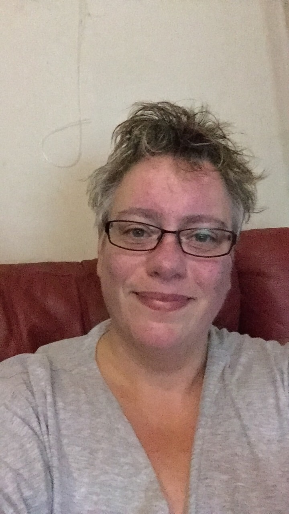

een plaatje van mij

Over Mij
Ik ben een 54 jarige vrouw die haar interesse in programeren eindelijk wil gaan voeden. Vandaar dat ik aan deze studie ben begonnen. Tevens heb ik de vaardigheden nodig om een nieuwe baan te kunnen vinden die overeen komt met mijn Autisme. Ik ben slechts 3 jaar geleden met autisme gediagnostiseerd
Home